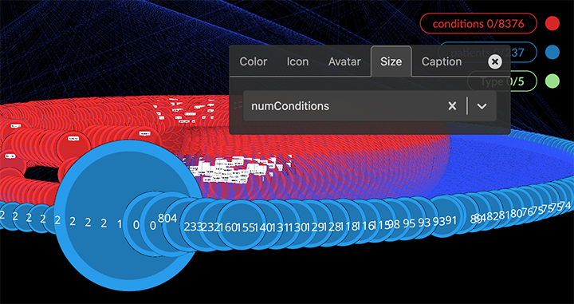
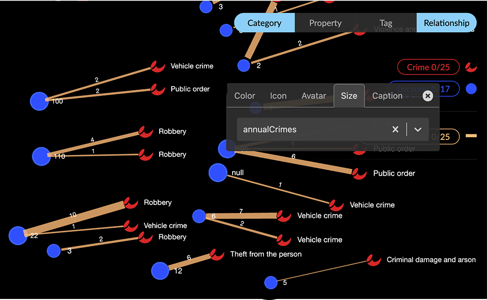
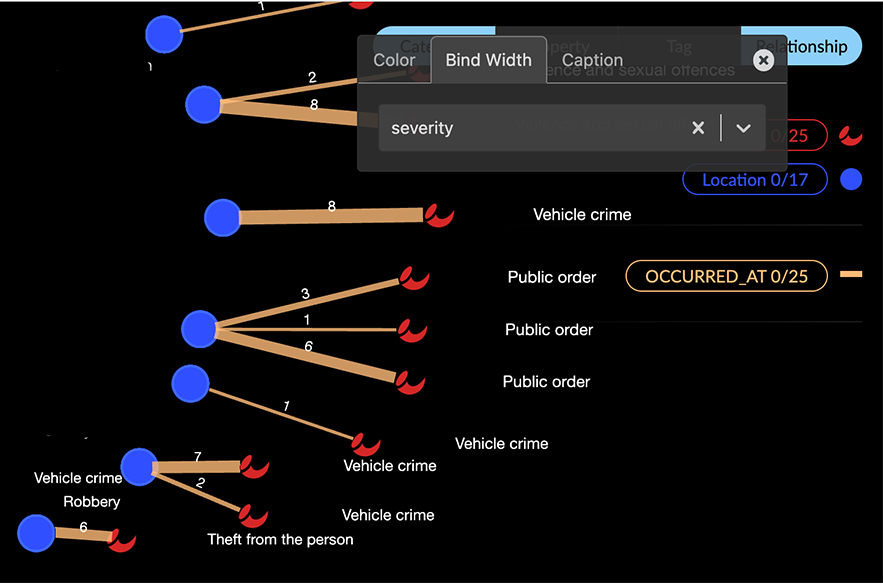
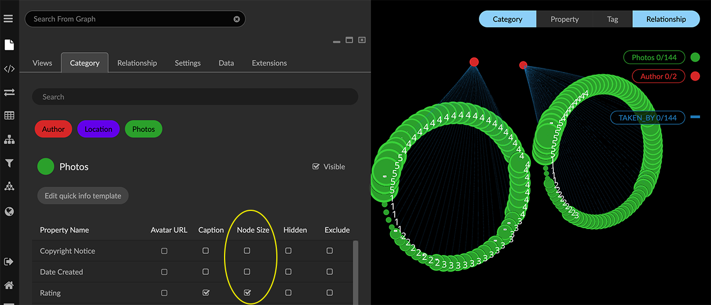
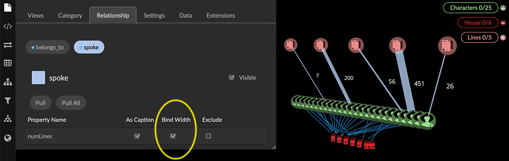

Scaling nodes or edges by a property value The Node Size Scale and Edge Width Scale sliders in the project’s Settings tab determines the basic size of all nodes and edges, respectively. From there, we can use the Style Settings dialog to scale node size or edge width to the values of a selected property. For example, in the following simulated healthcare data we’ve scaled the size of Patient nodes by their numConditions property, that is, the number of separate conditions each patient has complained of.  To scale nodes or edges by a property value: Go to the Legend and click the colored dot or line for a category or relationship (e.g., the Location category). In the styling setting dialog: For a category, open the Size tab and select a property to be used to scale node size (e.g. annualCrimes).  For a relationship, click the Bind Width checkbox for the relationship property (e.g. for OCCURED_AT, choose the severity property). This scales the width of OCCURED_AT edges by a measure of the severity of the crimes occuring at the connected location.  Although Node Size or Bind Width checkboxes are available for any property, a property with numerical values (rather than text) produces more meaningful visual results. You can also scale node size or edge width in the Project panel’s Category or Relationship tabs. For a category, click the Node Size checkbox for the property to be used to scale node size.  For a relationship, click the Bind Width checkbox for the desired property. 